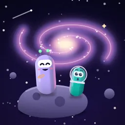

Mor Dalga
6 kişi
Bitir
Lobiden çek
Davet et
Oyun Seç (6)
Masa Sohbeti (4)
Tümü
6
Takımlı
2
Bire bir
2
Çok oyunculu
4
En çok oy: Kapsül Anlat (2)
Oylar öneridir; istediğin oyunu başlatabilirsin.
2
4+ kişi
Kapsül Anlat
Yasak kelimeyi söyleme
4+ kişi
İbre
Frekansı tuttur
?
?
1
3+ kişi
Sahtekar
Aramızdaki kim?
K
M
S
T
A
2+ kişi
Harf Kapmaca
Harfi ilk sen kap
2+ kişi
Şarkıda Geçsin
Dizeyi yakala
1+ kişi
Sohbet kartları
Masada muhabbet
Kapsül Anlat'ı başlat